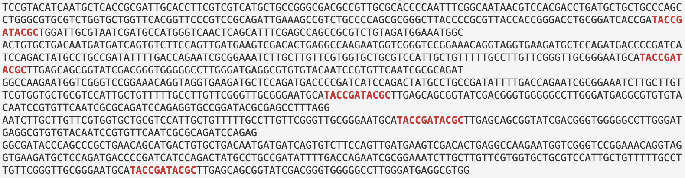

Unix shell introduction – continued
1 More on shell wildcards
Full list of shell wildcards
| Wildcard | Matches |
|---|---|
* |
Any number of any character, including nothing |
? |
Any single character |
[] and [^] |
One or none (^) of the “character set” within the brackets |
For those of you who know some regular expressions from coding in e.g. R, wildcards are conceptually similar to these, but the * and ? symbols don’t have the same meaning, and there are way fewer shell wildcards than regular expression symbols.
In particular, note that . is not a shell wildcard and thus represents a literal period when globbing.
Globbing does not work recursively by default, so ls *fastq.gz would only return gzipped FASTQ files in your current working dir.
After running some bionformatics program, it’s relatively common to have FASTQ files in a separate directory for each sample. In cases like that, you can use ** to match any directory. For example, in the pattern below, the ** would “traverse” the fastq dir within the data dir:
ls data/**/*fastq.gzSM04_R1.fastq.gz SM1031_R1.fastq.gz SM1042_R1.fastq.gz SM155_R1.fastq.gz SM181_R1.fastq.gz SM191_R1.fastq.gz SM207_R1.fastq.gz SM51_R1.fastq.gz
SM04_R2.fastq.gz SM1031_R2.fastq.gz SM1042_R2.fastq.gz SM155_R2.fastq.gz SM181_R2.fastq.gz SM191_R2.fastq.gz SM207_R2.fastq.gz SM51_R2.fastq.gz
SM1030_R1.fastq.gz SM1038_R1.fastq.gz SM109_R1.fastq.gz SM156_R1.fastq.gz SM190_R1.fastq.gz SM205_R1.fastq.gz SM226_R1.fastq.gz SM914_R1.fastq.gz
SM1030_R2.fastq.gz SM1038_R2.fastq.gz SM109_R2.fastq.gz SM156_R2.fastq.gz SM190_R2.fastq.gz SM205_R2.fastq.gz SM226_R2.fastq.gz SM914_R2.fastq.gzBut ** itself is not recursive either by default and only “traverses a single level”, so you’d need the following to list any FASTQ files that are exactly two levels deep from your current working dir:
ls **/**/*fastq.gzSM04_R1.fastq.gz SM1031_R1.fastq.gz SM1042_R1.fastq.gz SM155_R1.fastq.gz SM181_R1.fastq.gz SM191_R1.fastq.gz SM207_R1.fastq.gz SM51_R1.fastq.gz
SM04_R2.fastq.gz SM1031_R2.fastq.gz SM1042_R2.fastq.gz SM155_R2.fastq.gz SM181_R2.fastq.gz SM191_R2.fastq.gz SM207_R2.fastq.gz SM51_R2.fastq.gz
SM1030_R1.fastq.gz SM1038_R1.fastq.gz SM109_R1.fastq.gz SM156_R1.fastq.gz SM190_R1.fastq.gz SM205_R1.fastq.gz SM226_R1.fastq.gz SM914_R1.fastq.gz
SM1030_R2.fastq.gz SM1038_R2.fastq.gz SM109_R2.fastq.gz SM156_R2.fastq.gz SM190_R2.fastq.gz SM205_R2.fastq.gz SM226_R2.fastq.gz SM914_R2.fastq.gzHowever, you can make ** recursive by turning on the globstar option:
shopt -s globstar # Turn on 'globstar'
ls **/*fastq.gzSM04_R1.fastq.gz SM1031_R1.fastq.gz SM1042_R1.fastq.gz SM155_R1.fastq.gz SM181_R1.fastq.gz SM191_R1.fastq.gz SM207_R1.fastq.gz SM51_R1.fastq.gz
SM04_R2.fastq.gz SM1031_R2.fastq.gz SM1042_R2.fastq.gz SM155_R2.fastq.gz SM181_R2.fastq.gz SM191_R2.fastq.gz SM207_R2.fastq.gz SM51_R2.fastq.gz
SM1030_R1.fastq.gz SM1038_R1.fastq.gz SM109_R1.fastq.gz SM156_R1.fastq.gz SM190_R1.fastq.gz SM205_R1.fastq.gz SM226_R1.fastq.gz SM914_R1.fastq.gz
SM1030_R2.fastq.gz SM1038_R2.fastq.gz SM109_R2.fastq.gz SM156_R2.fastq.gz SM190_R2.fastq.gz SM205_R2.fastq.gz SM226_R2.fastq.gz SM914_R2.fastq.gzWith globstar turned on, the pattern above would find gzipped FASTQ files no matter how many dir levels deep they are (including when they are in your current working dir).
2 Command output redirection
As mentioned earlier, Unix commands nearly always print their output to the screen. But you can also “redirect” the output to a file or to another command.
With “>”, we redirect output to a file:
- If the file doesn’t exist, it will be created.
- If the file does exist, any contents will be overwritten.
echo "My first line" > test.txtcat test.txtMy first lineRedirection works not just with echo, but with every single command (or bioinformatics program) that prints output to screen:
ls > my_files_on_2023-08-04.txtcat my_files_on_2023-08-04.txt # Use tab completiondata
my_files_on_20230803.txt
test.txt>> (Click to expand)
With “>>”, we append the output to a file (that is, it won’t overwrite any existing content like >):
echo "My second line" >> test.txtcat test.txtMy first line
My second lineAnd to circle back to >, demonstrating how this will overwrite contents:
echo "My third line overwrote the first two!" > test.txtcat test.txtMy third line overwrote the first two!3 Move with mv, and cp/mv tips
The mv command is nearly identical to the cp command, except that it:
- Moves rather than copies files and/or dirs
- Works recursively by default
There is no separate command for renaming, because both cp and mv allow you to provide a different name for the target. Thus, if used as follows, mv functions merely as a renamer:
mv test.txt test_version2.txtAnd we can move and rename at the same time as well — let’s do that to restore our original location and name for the metadata file:
mv test_version2.txt sandbox/test_version3.txtBy default, both mv and cp will overwrite files without warning! Use the -i (for interactive) option to make it let you confirm before overwriting anything.
cp and mv — if the destination is:
- An existing dir, the file(s) will keep their original names.
- Not an existing dir, the path specifies the new name of the file or dir, depending on what the source is.
Exercise: Practice with mv
In which directory (in terms of a relative path from your working dir) would the FASTQ files end up with each of the following commands?
mv data/fastq data/fastq_filesmv data/fastq fastqmv data/fastq .
What if you wanted to move the FASTQ files directly into your current working directory (from data/fastq)?
Solutions (click here)
In which directory (in terms of relative path from your working dir) will the FASTQ files end up with each of the following commands?
mv data/fastq data/fastq_files— in the dirfastq_files(we’ve really just renamed the dirfastqtofastq_files)mv data/fastq fastq— infastq(because our source is a dir, so is the destination)mv data/fastq .— infastqalso! (we’d need the syntax shown below to move the individual files directly into our current dir)
What if you wanted to move the FASTQ files directly into your current working directory?
For one file:
mv data/fastq/ASPC1_A178V_R1.fastq.gz .For all files:
mv data/fastq/* .4 Remove files with rm
The rm command removes (deletes) files and directories.
One important thing to note upfront is that rm will permanently and irreversibly delete files without the typical “intermediate step” of placing them in a trash bin, like you are used to with your personal computer. With a healthy dosis of fear installed, let’s dive in.
To remove one or more files, you can simply pass the file names as arguments to rm as with previous commands. We will also use the -v (verbose) option to have it tell us what it did:
# This assumes you ran `touch file1 file2 file3` earlier on; do so now if needed
rm -v file1 # Remove 1 fileremoved ‘file1’rm -v file2 file3 # Remove 2 filesremoved ‘file2’
removed ‘file3’Recursive rm
As a safety measure, rm will by default only delete files and not directories or their contents — i.e., like mkdir and cp, it refuses to act recursively by default. To remove dirs and their contents, use the -r option:
# You should have these from 2.4 (if not, run: mkdir "my new dir" "my new dir2")
rm -r "my new dir" "my new dir2"removed directory: ‘my new dir’
removed directory: ‘my new dir2’You should obviously be quite careful with rm -r!
Finding text with grep / zgrep
grep allows you to search a file for any text or text patterns. By default, it will return the entire line whenever it finds a match, and it is often set up (including at OSC) to highlight, within that line, the matching text in bold red in its output.
For example, let’s say we wanted to print the sequences in our FASTQ file that contain “TACCGATACGC”:
zcat data/fastq/SM04_R1.fastq.gz | grep "TACCGATACGC"
# (Only part of the output is shown in a screenshot below)
If we wanted to know how many reads contain a certain sequence (e.g, the shorter and therefore more common “CCAGTA”), we can simply pipe grep’s output into wc -l:
zcat data/fastq/SM04_R1.fastq.gz | grep "CCAGTA" | wc -l56691grep has many options — one of those is -c, which will directly count matching lines instead of printing them (i.e., the command below is an alternative to the command above where we piped greps output into wc -l):
zcat data/fastq/SM04_R1.fastq.gz | grep -c "CCAGTA"56691grep even has a zgrep counterpart for gzip-compressed files, so the above can be further shortened by omitting zcat and passing the FASTQ file name as an argument to zgrep:
zgrep -c "CCAGTA" data/fastq/SM04_R1.fastq.gz56691We could also create a new FASTQ file whose sequences match our search by printing one line before each match (-B1) and two lines after it (-A2):
zgrep -B1 -A2 --no-group-separator "CCAGTA" data/fastq/SM04_R1.fastq.gz > CCAGTA.fastq